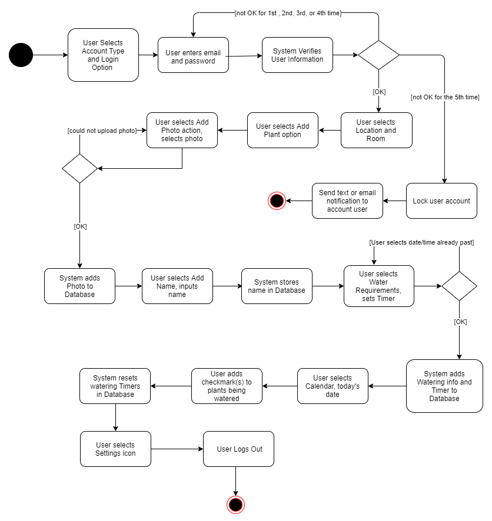
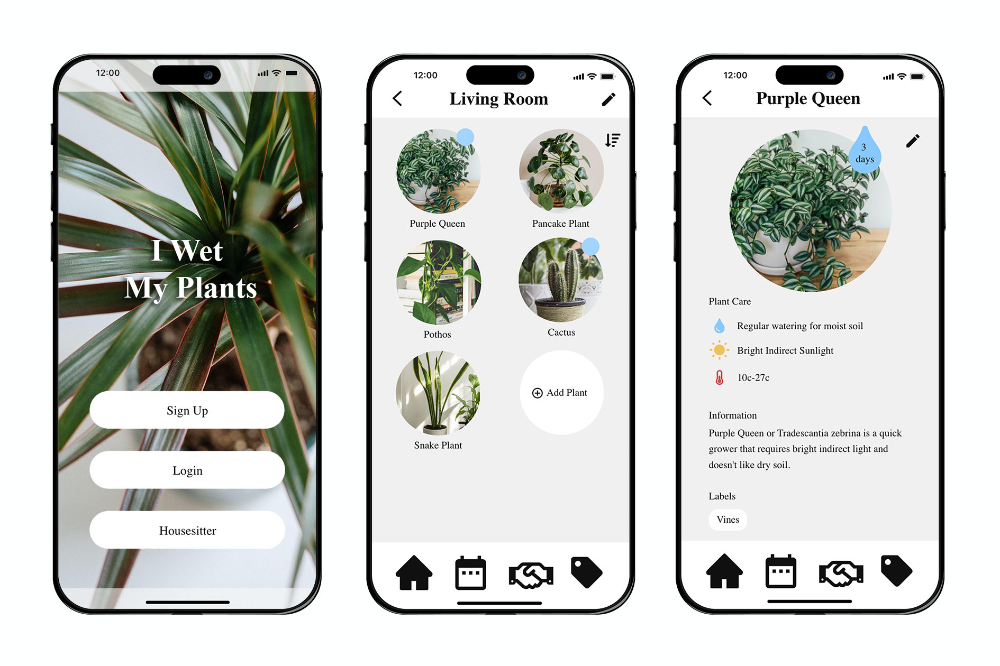
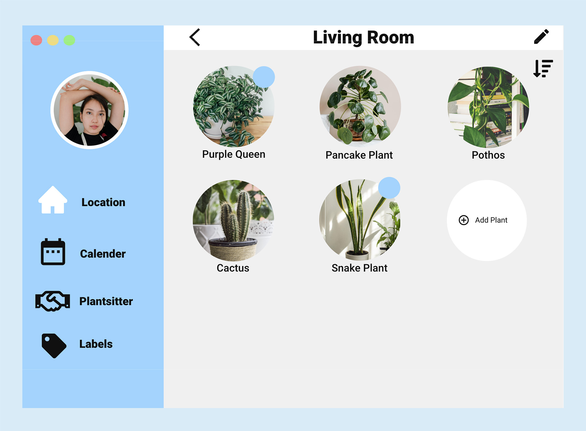
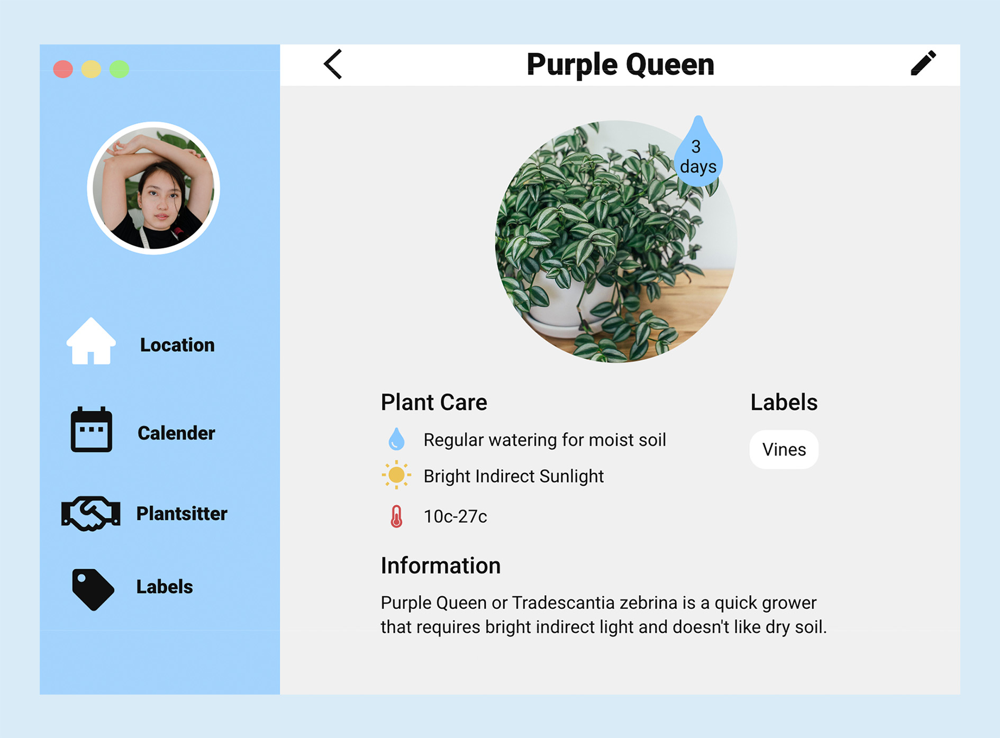
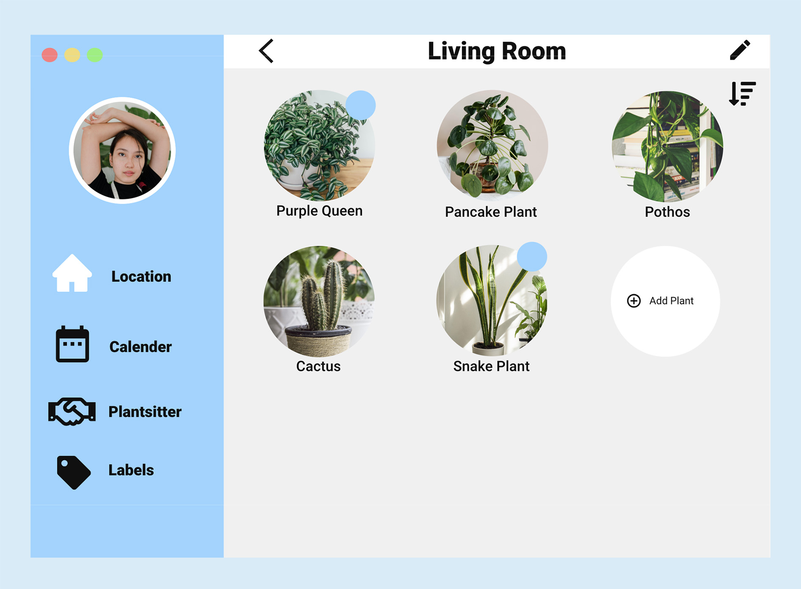
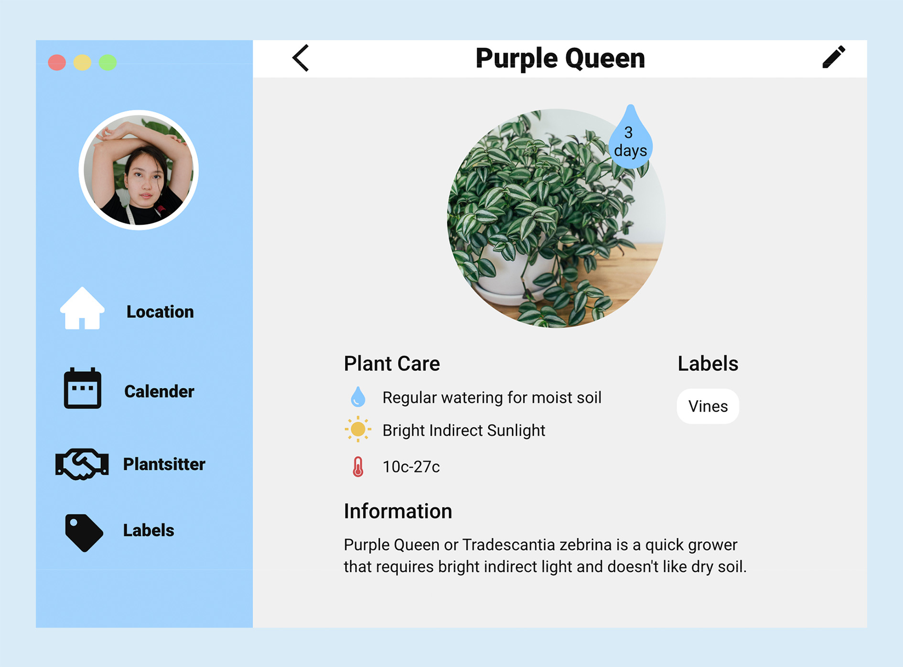

I Wet My Plants
Helping individuals and companies organize their plants care needs.
Our web app makes it easy for individuals or businesses to manage their plant care needs. Developed by a team of five over three months using Python, HTML, CSS, JavaScript, and SQL, the project was implemented with SCRUM principles for effective collaboration. My responsibilities included the design management, project write ups, personas, user stories, storyboards, UML diagram, activity and sequence diagrams, crafting database schema, conducting acceptance tests, coding HTML/CSS pages, making demo videos and delivering presentations.
Milestone 1: Project Ideation
In this milestone, we brainstormed and evaluated various project ideas that aligned with our interests and goals, aiming to identify feasible concepts to pursue within the given timeline. Through collaboration and idea-sharing, we compiled a list of potential projects, assessing their viability and narrowing them down to the most promising one.
Milestone 2: Project Definition and Planning
In this milestone, we facilitated a collaborative effort among team members to produce a detailed project and product documents, ensuring alignment with business objectives and strategic priorities.
Product Description
Our project is a houseplant management system, which will help users schedule plant watering and other types of care. This application will allow profile pages for each plant, which will include a variety of data, such as photos of the plant (uploaded by the user), its name, watering schedule, soil type, humidity requirements, sunlight requirements, and other details desired by the user. This application will also include a database with basic information on common plant species and their general types of care, so that users can easily fill in each plant's information, then customize as needed. Since this will be a web application, the user can access it via their desktop or mobile device to upload photos and other information. Each user’s account will send updates to the user via text or email (their preference). It would also be possible to send updates to an outside user, such as a house-sitter, who would be caring for the plants.
Need and Value
Many people find it difficult to remember to water their plants in a timely manner, due to their busy lifestyles. With the occurrence of Covid-19, houseplants have become a booming industry, as many people are spending more time at home. Plant owners have anywhere from a few to hundreds of plants, based on their interest level. Even after the pandemic concludes, many new people will have gained a love of houseplants and will benefit from a plant management system. Users would save time by knowing exactly which plants need their attention and also reduce the amount of money lost on neglected plants.
Stakeholders
- Seasoned houseplant lovers seeking organization
- New houseplant enthusiasts, who need help figuring out how often to water certain types of plants
- House-sitters, who care for plants while their owners are away
- Team Omicron, as administrators, updating the quality and functionality of the app
Technology Requirements
- Standard languages for creating a locally-hosted web application:
- HTML
- CSS
- JavaScript (as listener for user input, retrieving data from server)
- Python
- MySQL for data storage
Milestone 3: User-Centered Design
In this milestone, we conducted research on our target audience's needs and behaviors to craft personas and epics, create comprehensive user stories and acceptance tests, design a robust database schema and UML diagram, and establish story points and a product backlog. This work provided a strong foundation for a successful product development process while assuring that we met the needs of our target audience.
Personas
Epics and Stories


Prioritized Product Backlog
Prioritized highest to lowest
1 point = 2 hours
(points 5) “As Horatio, I would like to add my first plant to my house.”
(points 3) “As Horatio, I would like to see the details of my first plant.”
(points 4) "As Horatio, I would like to create an account through a simple interface that does not overwhelm me with too many advanced options."
(points 1) “As Horatio, I want easy access to a list of my plants.”
(points 4) “As Horatio, I want to be able to look up the differences between my individual plants based on their care needs.”
(points 5) “I Jimmy, want to log in with a code to see what my friend asked me to do at his house.”
(points 1) “As Jimmy, I want to have a task list of the plants I need to water today.”
(points 1) “As Reginald, I would like to remember when to run a humidifier around certain plants, so my more delicate exotics stay healthy.”
(points 1) “As Helena, I want to be reminded when to fertilize certain plants.”
(points 1) “As Helena, I want to track when to check and change the water for propagating plants.”
(points 1) “As Helena, I want a reminder of when to turn on my plant grow lights and when to turn them off.”
(points 2) “As Helena, I want to remember which plants are in quarantine (for pests, fungus, etc.) and how long they have been in treatment.”
(points 1) “As Reginald, I want to keep track of which plants are ready for sale, so I can let potential buyers know what they can purchase from me.”
(points 1) “As Ashe, quarantining plants is vital so that disease does not spread. I need to keep track of these plants and know when to integrate them back into the greenhouse.”
(points 1) “As Helena, I want to keep track of which plants are currently being propagated.”
(points 4) “As Horatio, I want reliable notifications.”
(points 1) “As Ashe, I want to at a glance know how many plants of any species that I have available to sell.”
(points 1) “As Reginald, I want to track how much my plants are worth, so that I can get a fair price when selling them.”
(points 1) “As Reginald, I would like to see a list of every variety (i.e. lower classification) I own for different plant types (e.g. hoya), so I know which ones I am missing.”
(points 1) “As Jimmy, I want to see where my tasks are located by which room of the house they are in this week.”
(points 2) "As Horatio, I would like a basic template for plant profiles (photo, name, water requirements, light requirements)."
(points 5) "As Ashe, I want a quick way to add a common plant that I have (database of plants)."
(points 2) “As Reginald, I would like to remember more specialized details about my plants, such as the price I paid for them, where I got them, their preferred soil type, pot size, etc.”
UML Diagram
Database Schema
Milestone 4: Diagrams and Prototyping
In this milestone, I sketched the visual design for our product, creating mockups and a high-fidelity prototype that was clickable for mobile and desktop platforms. Additionally, I contributed to the creation of detailed diagrams, such as activity, component, and sequence diagrams, to help the team understand the product's functionality and user flow.
Activity Diagram
Component Diagram

Sequence Diagram

Prototyping
 



Milestone 5: Coding and Testing
In this milestone, I worked on coding the Alpha version of our application and creating a testing table for my own code. I also collaborated with my team members to inspect and review each other's code, and we created documents outlining our inspection and review processes as well as a test plan and quality assurance document.
Milestone 6: Polishing and Presenting
In this milestone, I polished the HTML and CSS across every page of the application, ensuring consistency in design and experience. Additionally, I tested the fictionality feature on all items and created engaging presentation slides. Finally, I recorded a demo video with my team, which we presented to our stakeholders, highlighting the key features and benefits of the application.
Final Presentation Slides


What I Learned
Participating in the "I Wet My Plants" project provided me with a wealth of knowledge and skills in various domains, including user-centered design, project management, web development, collaboration, time management, and communication. By adopting a user-focused approach, I refined my techniques in creating personas, crafting user stories, and designing intuitive UX interfaces. Furthermore, I gained a deep understanding of Agile methodologies, specifically Scrum, and its associated practices, such as sprint planning and retrospectives. Additionally, I acquired practical experience in full-stack web development, utilizing HTML, CSS, JavaScript, and Python to build a fully operational web application.
What I Gained:
- The ability to embrace a user-centered design approach, focusing on understanding target audience needs and behaviors.
- Developed skills in personas, user stories, acceptance testing, and UX design.
- Developed proficiency in creating wireframes, prototypes, and high-fidelity designs.
- Experience in efficient collaboration and project management.
- Refined negotiation and conflict resolution skills.
- Became familiarized with front-end and back-end development, database management, and server-side management.
What Would I Change:
- Conduct more extensive user research to gather deeper insights into user needs and preferences.
- Incorporate accessibility standards.
- Iterate on designs based on user feedback and usability testing results.
- Set up regular check-ins with team members and stakeholders to ensure everyone is aligned.
- Better prioritize tasks and allocate resources.
- Optimize the application's performance and scalability.
- Ensure better security measures and practices.